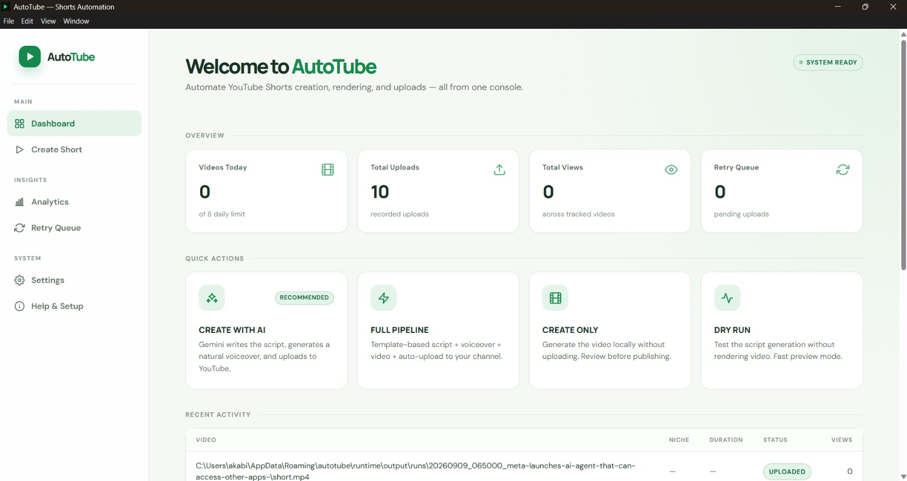
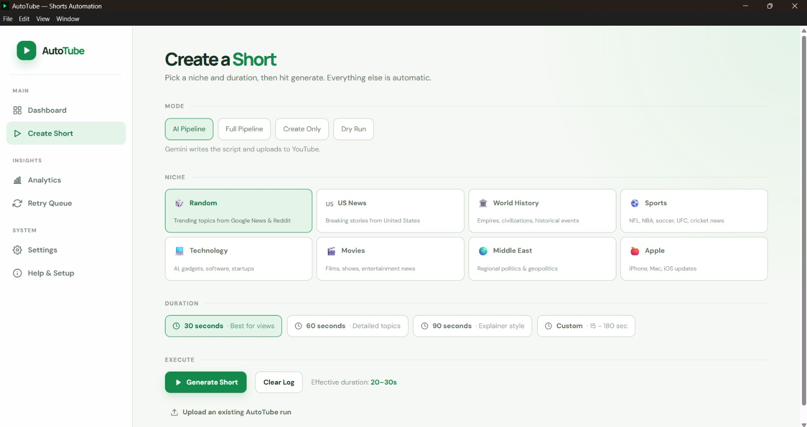
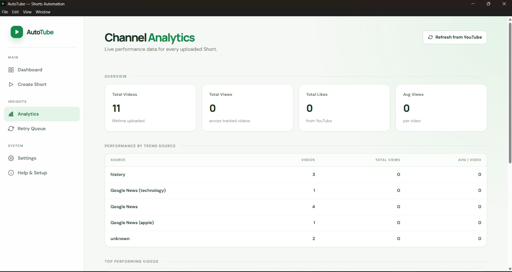
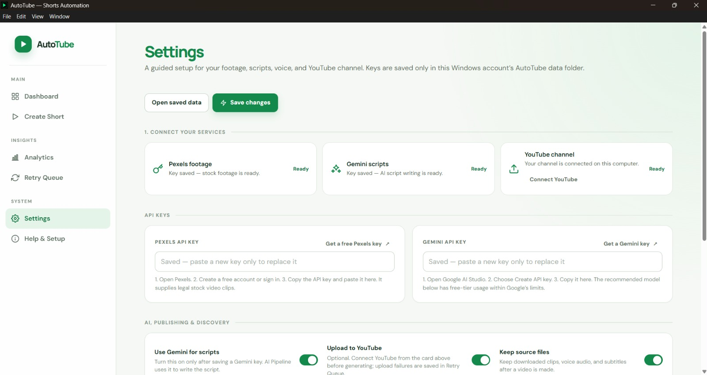

Find timely ideas
Pull topics from trends, news, Reddit, and selected niche feeds.
YouTube Shorts production for Windows
AutoTube brings topic discovery, scripts, voiceover, stock footage, captions, rendering, and YouTube upload into one local desktop workflow.

01 / REAL CHANNEL EVIDENCE
The channel owner confirmed that every Short published from day one was created and uploaded through AutoTube.
YouTube Analytics export covering 14 August–11 September 2026. Results are from one pilot channel and do not guarantee future performance.
02 / THE PRODUCTION PROBLEM
A creator can lose more time moving between services than shaping the actual idea. AutoTube keeps the production chain together so every new video starts from a clear, repeatable process.
03 / HOW IT WORKS
You decide the direction. AutoTube handles the production sequence.
Start with a niche, a current trend, or your own idea.
Build the script, narration, footage, music, and timed captions.
Check the completed vertical video before it reaches your channel.
Upload to YouTube, retry failed jobs, and review channel performance.
Choose AI-assisted or template-based production, select the content category, set the duration, and generate from one screen.

04 / ONE WORKSPACE
Pull topics from trends, news, Reddit, and selected niche feeds.
Combine a concise script, narration, footage, music, and captions.
Create locally and review the finished file before publishing.
Upload to your connected YouTube channel and retry jobs that need another attempt.

Review uploads and performance from the same desktop workspace.

05 / GUIDED SETUP
AutoTube guides you through Pexels footage, optional Gemini-assisted scripts, and YouTube connection. Saved credentials stay with the Windows account running the app.
06 / THE PILOT
The pilot proved production consistency and produced several breakout videos. It also showed that tighter durations and stronger openings are the next performance lever.
07 / PUBLISHED OUTPUT
View counts below reflect the supplied analytics period and may have increased since the export.
BUILT FOR
NOT THE RIGHT FIT
08 / FOUNDING OFFER
One clear price for the complete Windows application. No monthly AutoTube subscription.
Optional updates after year one: $49/year. Third-party service costs are not included.
09 / BEFORE YOU INSTALL
No. AutoTube is a desktop application for Windows 10 and 11. The production workflow runs on your computer.
No. AutoTube helps you produce and publish consistently, but viewer response, YouTube distribution, policy compliance, and monetization decisions remain outside the application's control.
The core template workflow can run without a paid AI subscription. An optional Gemini key enables AI-assisted script writing. Footage and YouTube features require the relevant connected accounts or credentials.
Yes. You can create the finished video locally without publishing it immediately. Every output should be reviewed for accuracy, footage suitability, rights, and channel fit.
Your installed version keeps working. An optional $49 annual renewal provides another year of product updates and email support.
Not currently. The launch version supports 64-bit Windows 10 and Windows 11.
READY FOR YOUR NEXT SHORT
Install AutoTube on Windows, connect your services, and turn the next topic into a reviewed, upload-ready Short.